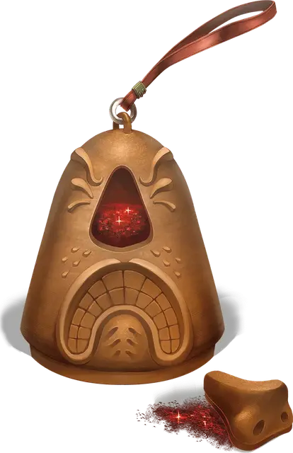

Порошок чихания и удушья
Dust of Sneezing and Choking
Чудесный предмет, необычный

Рекомендованная стоимость 51-250 зм
Этот порошок, хранящийся в маленьком контейнере, напоминает очень мелкий песок. Он похож на порошок исчезновения, и даже заклинание опознание [identify] показывает, что он им является. Его количества достаточно для одного применения. Если вы действием бросаете горсть этого порошка в воздух, вы и все дышащие существа в пределах 30 футов от вас должны преуспеть в спасброске Телосложения Сл 15, иначе они не смогут дышать и начнут безудержно чихать. Существо, попавшее под действие этого порошка, становится недееспособным и начинает задыхаться. Пока существо находится в сознании, оно может повторять спасбросок в конце каждого своего хода, оканчивая эффект на себе при успехе. Заклинание малое восстановление [lesser restoration] тоже оканчивает этот эффект на существе.